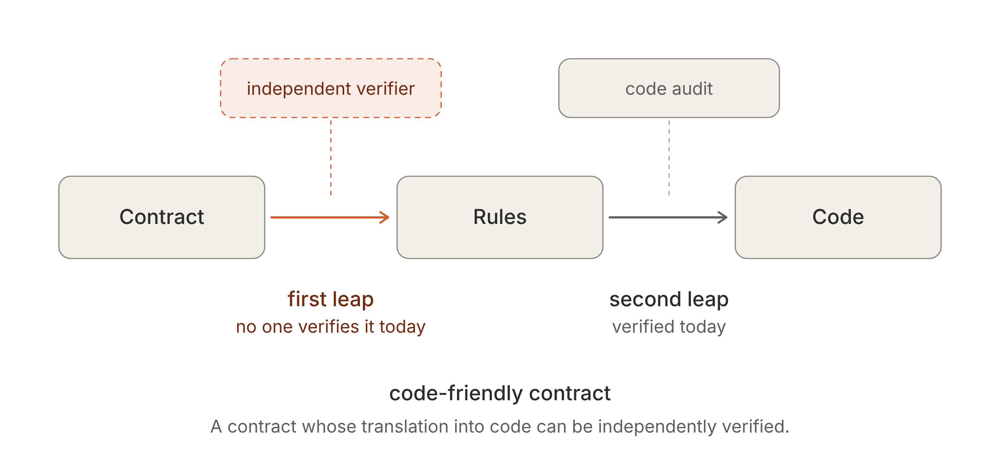

Hugo Muñoz Ureña
PhD (Law) · Blockchain Governance Engineer · Associate Investigator, Chaire DDSA, Université Laval
Between a contract and the code that performs it lies an intermediate text that no one signs. I work on whether that text is faithful to the contract, and on who should be able to show it.
Current field: tokenized securities under South Korea's electronic registration framework. Method: the first leap, from binding text to executable rules, verified by an independent third party and recorded before the code acts.

Publications
Working definition, v0.1 · Zenodo, 25 October 2026 · CC BY-ND 4.0 · time-stamped with OpenTimestamps (Bitcoin block 973151)
A contract whose translation into code can be independently verified.
Muñoz Ureña, H. (2026). Code-friendly contract: Definition of a term for the drafting and verification of contracts performed by code (Version 0.1). Zenodo. https://doi.org/10.5281/zenodo.23652576
CROSSWALK No. 1 — The KSD Guideline, read from the contract · 계약·코드 대응표 제1호
Reference table, v1.0 · Zenodo, 8 October 2026 · CC BY-ND 4.0
The guideline verifies that the code follows the business rules. Verifying that the business rules follow the contract is not yet anyone's task.
Muñoz Ureña, H. (2026). CROSSWALK No. 1 — The KSD Guideline, read from the contract · 계약·코드 대응표 제1호 (Version 1.0). Zenodo. https://doi.org/10.5281/zenodo.23245237
With Geneviève Parent · Contribution to the UN Special Rapporteur on the right to food, consultation on science, technology and food systems · Chaire DDSA, Université Laval, October 2026 · French
Digital technologies serve food security and diversity only if communities can verify that the coded rule reflects what they decided.
Policy paper · SSRN, July 2026
Muñoz Ureña, H. (2026). When the Code Keeps Its Promise But the Contract Doesn't: A Governance Gap in South Korea's Tokenized Securities Framework. SSRN. https://doi.org/10.2139/ssrn.7124760
Public comments to regulators
Financial Services Commission (Korea) — Public Notice No. 2026-670, amendments to the Enforcement Decree of the Electronic Registration Act and to the Electronic Registration Business Regulation
Personal-capacity opinion, 10 November 2026 (Seoul) · in favor of the draft, with one supplementary opinion: that draft Decree Art. 17-3 (5) name the procedure for confirming the correspondence between the business rules applied by a ledger's smart contracts and the terms of issue, and that a dated correspondence record, by a person with no part in drafting those rules or operating the ledger, be among the evidence documents · summary and proposed wording in Korean, body in English · CROSSWALK No. 1 as attachment
Read together, the texts verify the code against the business rules, and the ledger against the law. What no document records is whether the business rules correspond to the issuance documents.
U.S. Securities and Exchange Commission — Transfer Agent Rules (File No. S7-2026-30)
Personal-capacity comment letter, 30 October 2026 · published in the Commission's comment file, with CROSSWALK No. 1 as enclosure · proposes that Rule 17ad-12 name the risk that business rules applied by automated means are not faithful to the binding instrument they implement, and that a competent person with no part in that translation verify them
The verification does not create that responsibility. It creates the evidence with which to discharge it.
Monetary Authority of Singapore — Consultation on Proposed Amendments to the Payment Services Act 2019 for Stablecoins Regulation (Consultation Paper P015-2026)
Personal-capacity response, 8 September 2026 · proposes the distinction between verified capability and declared capability, and the capability attestation as a document
Money is verified; code is declared.
Earlier work: technology and food law (2023)
Before this work on tokenized securities, the same questions ran through Passe-Partout®, the food-law podcast I co-host with Marlen León. Three episodes from 2023, in Spanish, and a contribution to an FAO consultation.
Ep. 10 — Blockchain and the food chain
Podcast episode, 26 January 2023 · 16 min · Spanish
What blockchain is, and what it brings to the food sector.
Ep. 21 — The FDA's tech-enabled traceability
Podcast episode, 6 April 2023 · 17 min · Spanish
The FDA's New Era of Smarter Food Safety: AI, IoT, sensors and blockchain in food safety control.
Ep. 35 — Blockchain: the digital transformation of customs
Podcast episode, 16 July 2023 · 16 min · Spanish
Experiences with blockchain in customs services around the world.
Answer to the FAO consultation on science–policy interfaces
With Marlen León Guzmán · Contribution to the online consultation of the FAO Office of the Chief Scientist, Global Forum on Food Security and Nutrition (FSN Forum), January 2023 · archived copy of 23 January 2023 (the original FAO file is no longer accessible)
The people who generate knowledge and those who make policies do not usually relate to each other.
León Guzmán, M. & Muñoz Ureña, H. (2023). Answer to the consultation "What are the barriers and opportunities for scientists and other knowledge holders to contribute to informing policy for more efficient, inclusive, resilient and sustainable agrifood systems?" FAO, FSN Forum. Archived: https://web.archive.org/web/20230123195447/https://assets.fsnforum.fao.org/public/contributions/2023/Global%20Forum%20on%20Food%20Security%20and%20Nutrition%20FAO-EN_0.pdf
Our 2023 work already named the two moments that matter most in regulatory change: when the rule is drafted, and the transition before it takes effect. In 2023 the question was what these technologies could do for food safety and trade. Today it is what the code must be verified against.